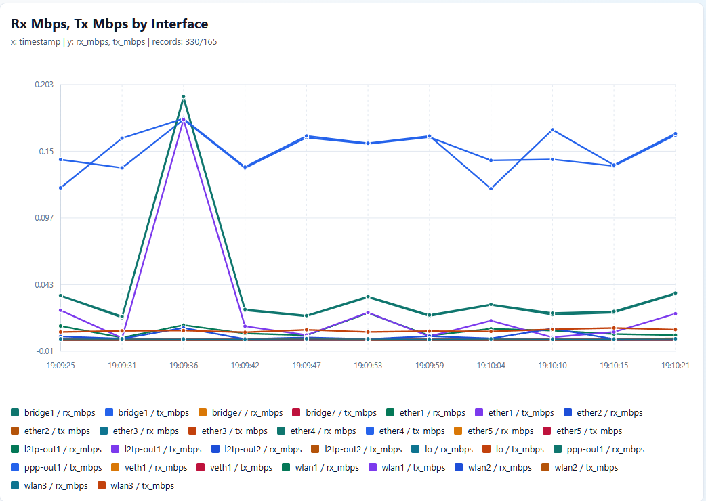

Examples¶
A few working examples that use inventory-backed targets and the operation
model directly. Each example creates one operation with device.operation so
the intent stays visible.
Setup¶
The examples share this setup. Write operations are planned by default. Set
NETWORK_LANG_APPLY=1 to execute them against the target device.
from __future__ import annotations
import os
from dataclasses import asdict
from pprint import pprint
from network_lang import (
FlowExpectation,
FlowObservation,
reconcile_flow_envelope,
target_device,
)
from network_lang.adapters import plan_routeros_operation
apply_changes = os.environ.get("NETWORK_LANG_APPLY", "").strip().lower() in {
"1",
"true",
"yes",
"y",
"on",
}
bridge = os.environ.get("NETWORK_LANG_EXAMPLE_BRIDGE", "bridge2")
bridge_port = os.environ.get("NETWORK_LANG_EXAMPLE_PORT", "ether8")
vlan_name = os.environ.get("NETWORK_LANG_EXAMPLE_VLAN", "vlan_mock_client")
vlan_id = int(os.environ.get("NETWORK_LANG_EXAMPLE_VLAN_ID", "220"))
updated_vlan_id = int(os.environ.get("NETWORK_LANG_EXAMPLE_UPDATED_VLAN_ID", "221"))
target = os.environ.get("NETWORK_LANG_TARGET", "edge-01")
device = target_device(target)
print(f"target: {device.name} ({device.url})")
print(f"write operations: {'execute' if apply_changes else 'dry-run'}")
List Neighbours¶
List all neighbours of a device in the inventory.
operation = device.operation("network.neighbors.list")
print(operation.name)
pprint(operation.params, sort_dicts=False)
result = device.execute(operation)
pprint(result.to_dict(), sort_dicts=False)
Create Firewall Filter¶
Create a dummy disabled firewall filter rule on a device in the inventory.
operation = device.operation(
"network.firewall.rules.create",
rule={
"chain": "forward",
"action": "accept",
"disabled": True,
"comment": "network_lang example disabled firewall rule",
},
)
print(operation.name)
pprint(operation.params, sort_dicts=False)
if apply_changes:
result = device.execute(operation)
pprint(result.to_dict(), sort_dicts=False)
else:
plan = plan_routeros_operation(operation)
pprint(
{
"capability": plan.capability,
"warnings": plan.warnings,
"steps": [asdict(step) for step in plan.steps],
},
sort_dicts=False,
)
List Firewall Filters¶
List all firewall filters of a device in the inventory.
operation = device.operation("network.firewall.rules.list")
print(operation.name)
pprint(operation.params, sort_dicts=False)
result = device.execute(operation)
pprint(result.to_dict(), sort_dicts=False)
List Connected Routes¶
List all dynamically active connected routes of a device in the inventory.
operation = device.operation(
"network.routes.list",
match={
"dynamic": "true",
"active": "true",
"connect": "true",
},
)
print(operation.name)
pprint(operation.params, sort_dicts=False)
result = device.execute(operation)
pprint(result.to_dict(), sort_dicts=False)
List Slave Interfaces¶
List all running slave interfaces of a device in the inventory.
operation = device.operation(
"network.interfaces.list",
match={
"running": "true",
"slave": "true",
},
)
print(operation.name)
pprint(operation.params, sort_dicts=False)
result = device.execute(operation)
pprint(result.to_dict(), sort_dicts=False)
Add Bridge Port¶
Add a new port to bridge2 on a device in the inventory.
operation = device.operation(
"network.bridge.ports.create",
port={
"bridge": bridge,
"interface": bridge_port,
"comment": "network_lang example bridge port",
},
)
print(operation.name)
pprint(operation.params, sort_dicts=False)
if apply_changes:
result = device.execute(operation)
pprint(result.to_dict(), sort_dicts=False)
else:
plan = plan_routeros_operation(operation)
pprint(
{
"capability": plan.capability,
"warnings": plan.warnings,
"steps": [asdict(step) for step in plan.steps],
},
sort_dicts=False,
)
Create VLAN Interface¶
Create a new VLAN interface and attach it to bridge2.
operation = device.operation(
"network.vlans.create",
vlan={
"name": vlan_name,
"interface": bridge,
"vlan_id": vlan_id,
"comment": "network_lang example vlan",
},
)
print(operation.name)
pprint(operation.params, sort_dicts=False)
if apply_changes:
result = device.execute(operation)
pprint(result.to_dict(), sort_dicts=False)
else:
plan = plan_routeros_operation(operation)
pprint(
{
"capability": plan.capability,
"warnings": plan.warnings,
"steps": [asdict(step) for step in plan.steps],
},
sort_dicts=False,
)
Update VLAN ID¶
Edit the VLAN id of the previously created VLAN.
operation = device.operation(
"network.vlans.update",
name=vlan_name,
vlan={
"vlan_id": updated_vlan_id,
"comment": "network_lang example vlan update",
},
)
print(operation.name)
pprint(operation.params, sort_dicts=False)
if apply_changes:
result = device.execute(operation)
pprint(result.to_dict(), sort_dicts=False)
else:
plan = plan_routeros_operation(operation)
pprint(
{
"capability": plan.capability,
"warnings": plan.warnings,
"steps": [asdict(step) for step in plan.steps],
},
sort_dicts=False,
)
Graph RX Errors¶
Build a quick standalone HTML graph from a live operation result. Device graph helpers delegate graph-specific defaults, such as RouterOS interface grouping and byte-counter rates, to the adapter.
from network_lang.exporters import to_html
graph = device.graph(
"network.interfaces.list",
y="rx_errors",
match={"running": "true", "slave": "true"},
title="RX Errors by Interface",
)
to_html(graph, "rx_errors.html")
For traffic counters, ask for the operator-facing rate field. The RouterOS
adapter samples rx_byte and tx_byte and produces rx_mbps and
tx_mbps.
to_html(
device.graph(
"network.interfaces.list",
y=("rx_mbps", "tx_mbps"),
samples=12,
interval=5,
title="Interface Mbps",
),
"interface_mbps.html",
)
{kind=link}

The graph_html.py example uses the same adapter-backed path:
python3 graph_html.py
NetFlow Envelope Reconciliation¶
Reconcile identity, topology, and operational health signals from flow-derived evidence against an expected envelope.
expected = FlowExpectation(
target="customer0172",
network_device="tower-east",
interface="pppoe-customer0172",
envelope={
"rssi": (-65, -45),
"ccq": {"min": 80},
"mtu": 1500,
"rx_errors_delta": {"max": 0},
"traffic_mbps": (1, 20),
},
)
observed = FlowObservation(
exporter="tower-east",
src_host="10.20.30.45",
dst_host="8.8.8.8",
ingress_interface="pppoe-customer0172",
src_identifiers=("radius:user/customer0172",),
metadata={
"rssi": -78,
"ccq": 42,
"mtu": 1500,
"rx_errors_delta": 12,
"traffic_mbps": 0.4,
},
)
report = reconcile_flow_envelope(expected, [observed])
pprint(report.to_dict(), sort_dicts=False)